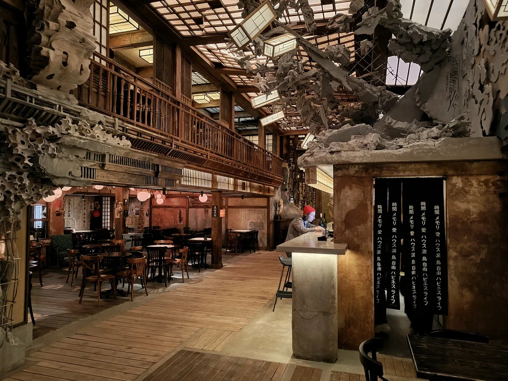
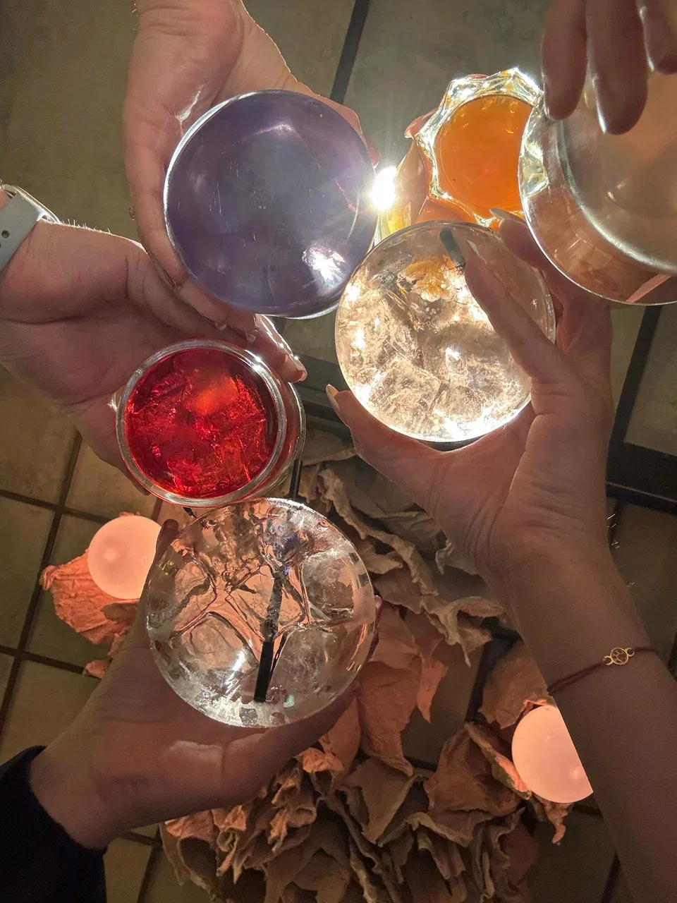

Бар в Басманном дворе
Хиросима,
моя любовь
Два этажа, две барные стойки.
Авторская азиатская кухня и коктейли.
Пространство
Два этажа.
Два настроения.
Внизу бетонная стойка словно разлетается к потолку. Наверху свет проходит сквозь ширмы, а за галереей скрываются тихие столики.
Название бара отсылает к фильму Алена Рене. Проект команды «Птица Синица Family».

Кухня и бар
От рамена
до саке.
Татаки с трюфельным майо, удон с красной и щучьей икрой, коктейли с юдзу и сакурой.
Контакты
Увидимся вечером.
Адрес
Москва, Спартаковская площадь, 16/15, строение 2Басманный двор · м. Бауманская
Построить маршрутЧасы работы
- Пн–чт, вс
- 15:00–00:00
- Пт–сб
- 15:00–02:00